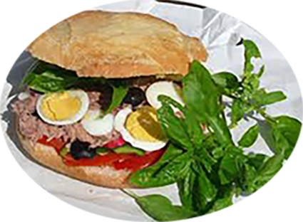

Pan bagnat niçois

Ingrédients
- 4 petits pains ronds
- 2 petits oignons
- 2 œufs durs
- 1 poivron vert
- 80 g de miettes de thon
- 8 filets d’anchois au sel
- quelques radis
- quelques olives noires de Nice
- quelques feuilles de basilic
- huile d’olive
- vinaigre
- 1 gousse d’ail
- sel et poivre
Recette
- Lavez vos tomates puis coupez-les en rondelles.
- Coupez également en rondelles les oignons après avoir pris soin de les éplucher.
- Faites cuire vos œufs et coupez-les en rondelles.
- Taillez votre poivron.
- Sur la partie inférieure du pain, ajoutez tous les ingrédients en démarrant par les légumes, l’œuf et le thon.
- Assaisonnez et recouvrez le tout avec la partie supérieure du pain.
- Si vous le pouvez, essayez de bien appuyer sur le dessus du pain afin que tous les éléments se tiennent bien.
|